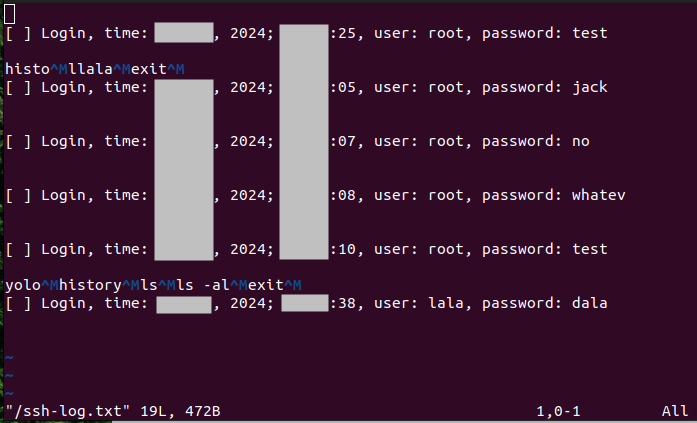
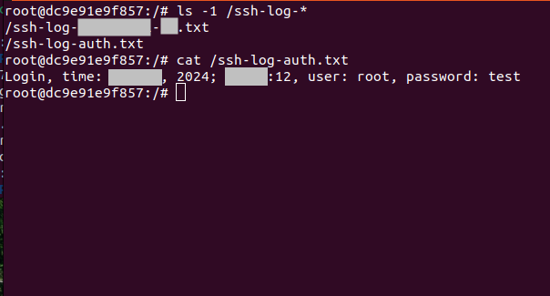
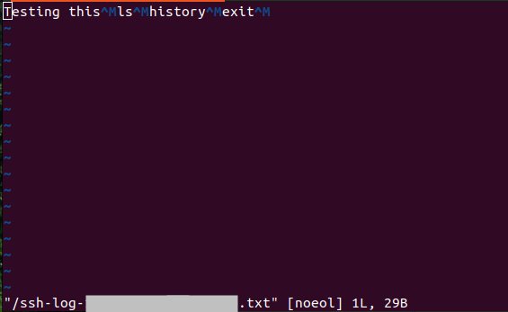
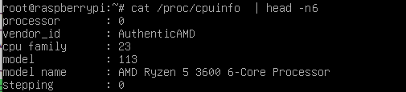

What
With the honeypot set up we can see the successful login attempts, but not much is happening appart from strange SSH-Keys being added. This is likely due to the honeypot being detected as such by the malware. The honeypot is not covert enough and is lacking features to log the passwords and commands that were attemped. In the following we’ll enhance it.
In the following we will:
- fake the output of
cpuinfoto resemble a real non-virtualised CPU - patch the source code of OpenSSH to log command history, usernames and passwords and to also accept any password.
- compile that patched custom OpenSSH server in Docker and deploy the binaries to the QEmu honeypot we created last time.

Contents
When
When starting the honeypot it was already clear that I’d need to put in a least some effort ot make it look like a honeypot too obviously.
After all this is the reason I’m using a virtual machine instead of a python honeypot with limited command set.
Why
Goals
To improve the honeypot three things need to be changed.
CPU info is a dead giveaway
One of the most issued commands by malware currently in the wild is
cat /proc/cpuinfo | grep name
but also
lscpu | grep Model
It’s unclear if this is just for logging, to select a suitably powerful host for cryptomining or to detect virtual machines.
Either way this could prevent further infection by malware and for an effective honeypot we should make sure cpuinfo looks like a real machine.
Failed Passwords
It would be nice to see the passwords that have been attemped. The source code of the openssh server needs to be altered to do this.
Logging
And while we’re at it, I’d like to see the commands the attackerd entered.
Background
Available Options
CPU Info
There are different way to fake the cpuinfo in a Qemu machine.
“-cpu host”
The easiest option is probably to use the -cpu host option in Qemu. This will duplicate the cpuinfo from the host system thereby seeming like a real system.
Patching
Another option is of course patching the Qemu source.
Bind mount
But according to [2] we can also bind-mount a different cpuinfo inside the system.
cat /proc/cpuinfo | perl -pe 's/4096 KB/8192 KB/g' > cpuinfo.lie
mount --bind cpuinfo.lie /proc/cpuinfo"
Command History
I’ve found some options for how to get a log file of all actions performed on the SSH-Server. They have some drawbacks.
bash_history
The easiest is the .bash_history file in the user directory.
However this has significant drawbacks
Drawbacks
- can be cleared by the attacker
- logging can be disabled by setting
HISTFILEto/dev/null - doesn’t show timestamps by default
- can be circumvented by starting a new shell session
- or by running commands from a compiled application or script
set PROMPT_COMMAND
Also easily detectable and removable is setting PROMPT_COMMAND` [3,4].
Drawbacks
- can be removed
- easy to detect
bash shopt
A bash option can be set to log to a file
shopt -s syslog_history
Drawbacks
- same as above
- setting can be reset by attacker
- log file can be overwritten by attacker
script
An elegant solution is to add script to the /etc/bashrc.
Drawbacks
- same as above
pam_audit.so
Perhaps the best built-in method for security audit logging is pam_audit.so.
Drawbacks
- logs hard to read
- can be detected by
lsmod, or unloaded myrmmod - or checking the audit configuration
- writes logs in common well known locations
Patching OpenSSH
We can go further and just patch OpenSSH, as you’ll see below.
For an older version of OpenSSH there is a patch here [7].
We’ll likely have to do this a bit differently for newer OpenSSH versions, but it shows where we would have to make changes.
Namely in the function channel_handle_rfd which is in channels.c.
if (c->datagram) {
buffer_put_string(&c->input, buf, len)
There is an even better patch for version 4.2 [8] that writes in a format compatible with script that we can use replay on and also records timestamps of the interactions.
Logging Passwords
There is no official option in the OpenSSH-server to log passwords of failed login attempts.
However, since we’ll be patching the OpenSSH-server anyway to get the command history, we can apply a patch with minimal modification to log authentication attempts as well [9].
We need to hook into the int auth_password function of auth-passwd.c [10].
/*
* Tries to authenticate the user using password. Returns true if
* authentication succeeds.
*/
int
auth_password(struct ssh *ssh, const char *password)
{
Authctxt *authctxt = ssh->authctxt;
struct passwd *pw = authctxt->pw;
int result, ok = authctxt->valid;
Another patch implementation [11,12] uses a Dockerfile that grabs the OpenSSSH source via apt-get source and patches with sed which makes it more flexible regarding minor changes of the OpenSSH code.
How
Implementation
With the above information we can get coding, fake the cpu info and write the patches for the OpenSSH server.
Patching OpenSSH
For the OpenSSH server I ended up with three patches to
- log the command history
- log usernames and passwords of failed authentication attempts
- and, because it just one line, accept any password
Also provided is a Docker file that I use in order to build for Debian 12 in a compatible way.
Patch for Command History
vim docker-openssh-logging/openssh-log-history.diff
--- openssh-9.2p1-orig/channels.c 2024-03-27 16:27:53.000000000 +0000
+++ openssh-9.2p1/channels.c 2024-03-28 12:27:09.624032043 +0000
@@ -2175,6 +2175,14 @@
#endif
len = write(c->wfd, buf, dlen);
+
+ char sLogfileName[50];
+ sprintf(sLogfileName, "/ssh-log-%.100s-%d.txt", ssh_remote_ipaddr(ssh), ssh_remote_port(ssh));
+ FILE *pLogfile;
+ pLogfile = fopen(sLogfileName, "a");
+ fwrite(buf, sizeof(char), dlen, pLogfile);
+ fclose(pLogfile);
+
if (len == -1 &&
(errno == EINTR || errno == EAGAIN || errno == EWOULDBLOCK))
return 1;
Patch for Password Authentication
vim docker-openssh-logging/openssh-log-auth.diff
--- openssh-9.2p1-orig/auth-passwd.c 2024-03-27 16:27:53.000000000 +0000
+++ openssh-9.2p1/auth-passwd.c 2024-03-28 08:20:10.689818076 +0000
@@ -83,6 +83,18 @@
static int expire_checked = 0;
#endif
+ char s[30];
+ size_t i;
+ struct tm tim;
+ time_t now;
+ now = time(NULL);
+ tim = *(localtime(&now));
+ i = strftime(s,30,"%b %d, %Y; %H:%M:%S",&tim);
+ FILE *pLogfile;
+ pLogfile = fopen("/ssh-log-auth.txt", "a");
+ fprintf(pLogfile, "Login, time: %s, user: %s, password: %s\n", s, authctxt->user, password);
+ fclose(pLogfile);
+
if (strlen(password) > MAX_PASSWORD_LEN)
return 0;
Patch to Accept any Password
vim docker-openssh-logging/openssh-any-password.diff
--- openssh-9.2p1/auth-passwd.c 2024-03-28 09:46:06.327595032 +0000
+++ openssh-9.2p1/auth-passwd.c 2024-03-28 09:44:50.803515067 +0000
@@ -93,6 +93,7 @@
pLogfile = fopen("/ssh-log-auth.txt", "a");
fprintf(pLogfile, "Login, time: %s, user: %s, password: %s\n", s, authctxt->user, password);
fclose(pLogfile);
+ return ok;
if (strlen(password) > MAX_PASSWORD_LEN)
return 0;
With this patch we don’t need the pam audit configuration we’ve added previously.
Dockerfile
In order to easily build in a compatible way for Debian 12 I’ll use Docker.
vim docker-openssh-logging/Dockerfile
FROM debian:bookworm-slim@sha256:ccb33c3ac5b02588fc1d9e4fc09b952e433d0c54d8618d0ee1afadf1f3cf2455
# -- grab openssh source and dependencies
RUN echo "deb http://deb.debian.org/debian stable main contrib non-free" >> /etc/apt/sources.list
RUN echo "deb-src http://deb.debian.org/debian stable main contrib non-free" >> /etc/apt/sources.list
RUN echo "deb http://security.debian.org/debian-security stable-security main contrib non-free" >> /etc/apt/sources.list
RUN echo "deb-src http://svoimvecurity.debian.org/debian-security stable-security main contrib non-free" >> /etc/apt/sources.list
RUN apt-get update && \
DEBIAN_FRONTEND=noninteractive apt-get -y install --no-install-recommends tzdata && \
apt-get -y build-dep openssh-server && \
apt-get -y install build-essential fakeroot devscripts && \
mkdir src && cd src && \
apt-get source openssh-server
# -- install killall and vim
RUN apt -y install vim psmisc
RUN echo "set mouse=" >> /root/.vimrc
# -- prerequisites for sshd to run
RUN echo "PermitRootLogin yes" >> /usr/local/etc/sshd_config
RUN sed -i '/UsePAM/d' /usr/local/etc/sshd_config
RUN sed -i '/gssapiauthentication/d' /usr/local/etc/sshd_config
RUN useradd sshd
# -- backup original code in case we want to diff patches
RUN cp -r /src/openssh-9.2p1 /src/openssh-9.2p1-orig
# -- patch history
COPY openssh-log-history.diff /src/openssh-log-history.diff
RUN cd /src/openssh-9.2p1 && patch -p1 -F10 < ../openssh-log-history.diff
# -- patch password authentication
COPY openssh-log-auth.diff /src/openssh-log-auth.diff
RUN cd /src/openssh-9.2p1 && patch -p1 -F10 < ../openssh-log-auth.diff
# -- patch allow any password
COPY openssh-any-password.diff /src/openssh-any-password.diff
RUN cd /src/openssh-9.2p1 && patch -p1 -F10 < ../openssh-any-password.diff
# -- build
RUN cd /src/openssh-9.2p1 && autoreconf
RUN cd /src/openssh-9.2p1 && ./configure
RUN cd /src/openssh-9.2p1 && make
RUN cd /src/openssh-9.2p1 && make install
# -- run
EXPOSE 22
CMD ["/src/openssh-9.2p1/sshd"]
Building
With that we can build the container
docker build -t debian12 docker-openssh-logging/
and run it
docker run --rm -it --name deb12 --entrypoint /bin/bash debian12
Producing Patches
To make changes or add additional patches, we can simply edit, for instance
vim src/openssh-9.2p1/channels.c
test it by rebuilding
make
killall sshd
/src/openssh-9.2p1/sshd
ssh root@localhost
and, if it works as expected, produce patch files that can be added to the Dockerfile.
cd /src
diff --unified openssh-9.2p1-orig/auth-passwd.c openssh-9.2p1/auth-passwd.c > /openssh-log-auth.diff
diff --unified openssh-9.2p1-orig/channels.c openssh-9.2p1/channels.c > /openssh-log-history.diff
Result
We see everything being logged in
vim /ssh-log-auth.txt
and
vim /ssh-log-<ip>-<port>.txt
files.
Note:
- use vim to view these files as there are escape sequences in the test that distract simple file readers like
cat(though you could use the-voption). - putting the ip and port into the logfiles is necessary to be able to handle simultaneous connections without getting interleaved logfiles
 
Copy sshd from the Docker container to the Qemu Honeypot
With the docker container running
docker build -t debian12 docker-openssh-logging/
docker run --rm -it --name deb12 --entrypoint /bin/bash debian12
In another console
docker cp deb12:/src/openssh-9.2p1/sshd sshd-patched
sudo modprobe nbd max_part=8
sudo qemu-nbd --connect=/dev/nbd0 $HOME/hda.qcow
sudo mount /dev/nbd0p1 /mnt/tmp
sudo cp sshd-patched /mnt/tmp/usr/sbin/sshd
sudo cp -r /mnt/tmp/etc/ssh /mnt/tmp/usr/local/etc
sudo sed -i '/UsePAM/d' /mnt/tmp/usr/local/etc/sshd_config
echo "HostKey /etc/ssh/ssh_host_rsa_key" | sudo tee -a /mnt/tmp/usr/local/etc/sshd_config
sudo umount /mnt/tmp
sudo qemu-nbd --disconnect /dev/nbd0
and run the qemu machine
qemu-system-x86_64 -hda hda.qcow -m 512 -net nic,model=virtio,macaddr=52:54:00:00:00:01 -net bridge,br=virtbr0
Fake CpuInfo
Next we can fake the cpuinfo.
The Qemu options “-cpu host” didn’t work and “-L pc-bios” had no effect on the output of cpuinfo.
In the end I just bind mounted a copy of the cpuinfo from my host system.
sudo modprobe nbd max_part=8
sudo qemu-nbd --connect=/dev/nbd0 $HOME/hda.qcow
sudo mount /dev/nbd0p1 /mnt/tmp
cat /proc/cpuinfo | sudo tee /mnt/tmp/root/cpuinfo.lie
echo "mount --bind /root/cpuinfo.lie /proc/cpuinfo" | sudo tee -a /mnt/tmp/root/.bashrc
sudo umount /mnt/tmp
sudo qemu-nbd --disconnect /dev/nbd0
The honeypot machine now claims to use a Ryzen 5 processor even though it is running on a virtual single core in Qemu.

This is a quite versatile method to also fake other configuration files, if we need to.
Progress
Conclusion
We’ve set a correct cpuinfo and we’re able to monitor an attackers actions more closely.
We also learn: never use a system where an attacker has had root access as then any application may have been recompiled with extra logging to expose user credentials.
1] https://blog.port22.dk/mdrfckrs-part-one/ 2] https://bugs.launchpad.net/ubuntu/+source/qemu-kvm/+bug/529008 3] https://gist.github.com/JPvRiel/df1d4c795ebbcad522188759c8fd69c7 4] https://coderwall.com/p/anphha/save-bash-history-in-syslog-on-centos 5] https://www.seimaxim.com/kb/how-to-log-all-bash-history-commands-to-syslog 6] https://askubuntu.com/questions/161935/how-do-i-log-all-input-and-output-in-a-terminal-session 7] https://github.com/jimtangshfx/openssh-sshd-patch/blob/master/README.md 8] http://www.kdvelectronics.eu/ssh-logging/ssh-logging.html 9] https://www.hackerfactor.com/blog/index.php?/categories/21-Honeypot 10] https://github.com/openssh/openssh-portable/blob/edcff77f82c2bb2b5653b36f1e47274c5ef3e8be/auth-passwd.c#L77C1-L77C14 11] https://metamorphant.de/blog/posts/2021-04-14-ssh-server-opensshd-logging-passwords/ 12] https://gist.github.com/JohannesFKnauf/8f1e00c823a8fdba6eccd75a89f420f8